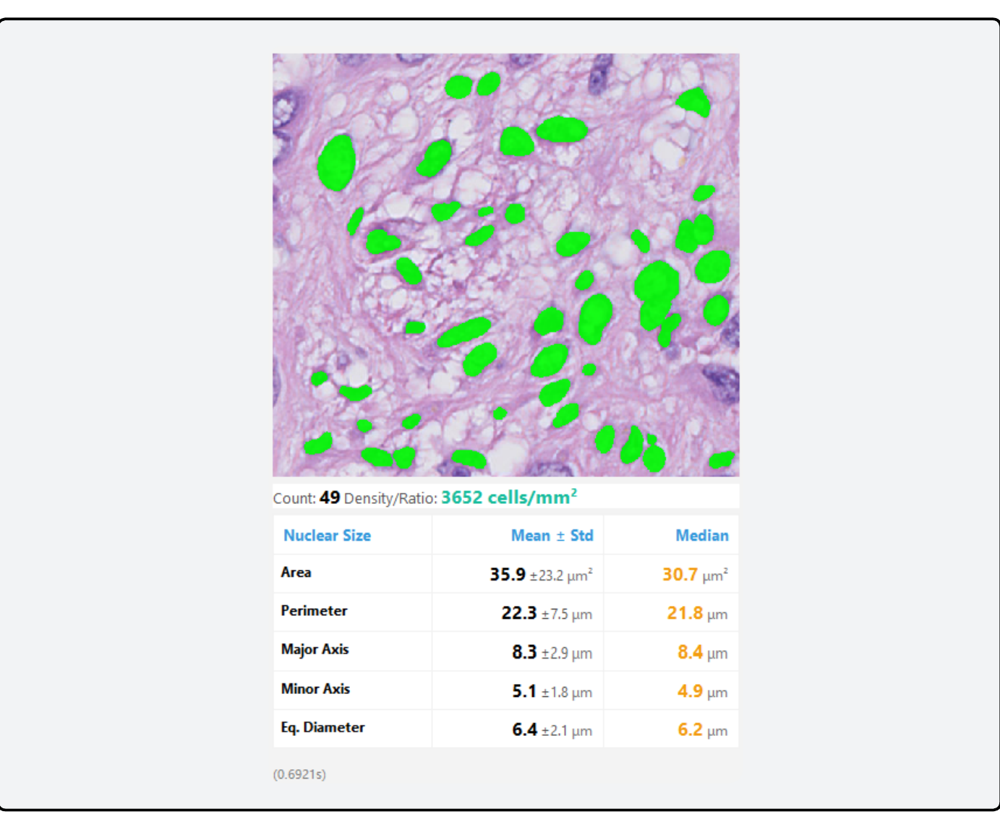

Brain Tumor Classification
Utilizes a powerful Vision Transformer (ViT) to provide real-time classification of common brain tumor patterns (glial, meningiothelial, etc.) on H&E slides, guiding initial diagnosis.
Real-Time Computational Pathology Companion
OnSight is a standalone, vendor-agnostic software that bridges the gap between powerful AI models and the daily workflow of pathologists, offering real-time analysis without compromising data privacy.
Artificial intelligence holds immense potential to enhance objectivity and efficiency in histopathology. Yet, its integration into clinical practice is critically stalled. Pathologists face a fragmented landscape of proprietary WSI formats, incompatible viewers, and data security hurdles that make deploying AI tools a complex, expensive, and often prohibitive endeavor.
"The best AI model is useless if it can't be used."
Works with any slide viewer on any OS. If it's on your screen, OnSight can analyze it. No APIs, no plugins needed.
All processing happens locally on your machine. Patient data and proprietary images are never transmitted or uploaded.
Leverages local GPU/CPU power to deliver live AI inferences as you navigate slides, enabling an interactive workflow.

OnSight ships with a suite of pre-trained models to assist with common histopathological tasks. Users can switch between models on-the-fly to match their diagnostic need.
Utilizes a powerful Vision Transformer (ViT) to provide real-time classification of common brain tumor patterns (glial, meningiothelial, etc.) on H&E slides, guiding initial diagnosis.

Objectify tumor grading by automatically detecting and counting mitotic figures in real-time. Calibrate results to physical area (mm²) for reproducible, report-ready metrics.

A YOLO-based model segments and counts Ki-67 positive and negative nuclei, providing a rapid and objective proliferation index. Includes controls for overlay transparency to aid interpretation.

A Cellpose-SAM module that segments and extracts a list of nuclear features for continuous cell phenotyping analysis and quantification in real time.

Integrates a Vision-Language Model that supports natural-language queries about the current image. Ask questions like, "What feature makes this glial?" to get deeper, interpretable insights from the AI.

OnSight-WSI is a dedicated Whole Slide Image extension built natively for Windows GPUs. It processes full-resolution slides (SVS, NDPI, TIFF) through a custom interactive viewer, enabling real-time, aligned overlays of HAVOC morphologic heterogeneity and RetinaNet-based mitosis detection. Download the extension from the links above to integrate it into your workflow.
OnSight is developed by the Diamandis Lab, a multidisciplinary team of pathologists, scientists, and engineers.
Meet The ResearchersDownload the latest version of OnSight. It's free, secure, and ready to use in minutes.